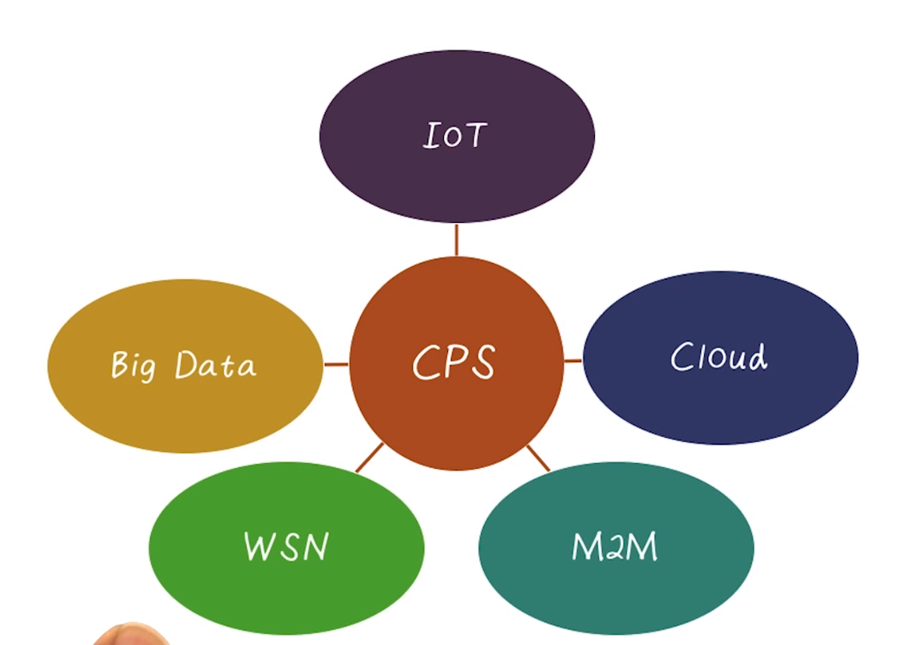

ICPSS Lecture Notes - Lesson 2 - Overview of Cyber-Physical Systems
Overview
- Broadly, CPS’s are systems that integrate computing into the physical world
- Advances in digital technology have led to a huge increas in the number of systems spanning the digital/physical gap (CPS’s)
Examples and Definitions
Cyber Systems
- Personal computers
- Mobile phones
- Embedded Devices
Physical Systems
- Motors
- Pumps
- Generators
- Valves
- Relays
Cyber Physical Systems
- Integrations of computation with physical processes
- Lee
- Embedded systesm together with their physical environment
- Marwedel
- An important distinction between physical and cyber is the non-reversibility or preemption of actuator operations. No rolling back an actuation.
- Normally CPS’s must act in real time
- RTOS!
- Open- and closed-loop control

- Lots of overlap and interrelationships between CPS and more well-known terms
- IOT can generally be thought of as CPS’s, for example
Example CPS Industries
Smart Manufacturing
- Leverage embedded technology to improve safety, effciency, etc
Emergency Response
- Medium/large scale
- Handling the threats against public safety, and protecting nature and valuable infrastructures
Air Transportation
- Large scale
- Operation and traffic management of aircraft systems
- It is expected that smart vehicles (such as drones) will be predominant in the near future
Healthcare
- Medium scale
- Monitoring health conditions of the patients and taking necessary actions
- E.g. pacemakers and more modern equivalents
- Support for in-home care and assisted living
Intelligent Transportation
- Medium/Large scale
- Improving safety, coordination and services in t raffic management and real-time info sharing
- Support communication between vehicles, infrastructure, and devices in the near future
Service Robots
- Small/medium scale
- Performing services for the welfare of humans
Building Automation
- Small/medium scale
- Provides optimum control and automation of HVAC, lighting, etc
Critical Infrastructure
- Large scale
- Distribution of daily life supplies such as water, electricity, gas, oil
CPS Challenges
Challenges for Securing CPS’s
- Many CPS are becoming more vulnerable to computer attacks for many reasons
- Need example adversary models for CPS
- Fundamentlaly different problems encountered in CPS as compared to traditional IT security
Adversary Models
- A systematic study of the security of any system requires the description of the threats we expect to face
- Developing an adversary model is a way to understand the scope of the problem and assess the risks
- Example models
- Cybercriminals (the usual suspects). Attacks may not be targeted, but can stil cause camage
- Disgruntled employees
- Terrorists, activists, and organized criminal groups
- No currently available public information about this happening yet, but some indicators
- Nation States
- e.g. notpetya, stuxnet
Maintaining Control of CPS
Countermeasures
- Better understand the consequences of an attack
- Design novel attack-detection algorithms
- Design new attack-resilient algorithms and architectures
Prevention
- Regulation
- Standards (both use and enforcement)
- shotout to NERC and NIST
- Best practices
Detection and Recovery
- Control systems can provide a paradigm shift for intrusion detection
- e.g. monitoring physical systems directly may reveal attacks we could not detect from the IT side
- Provide information awareness to operators of control systems
- Ideas from control theory such as reconfiguration or fault-detection and isolation can be leveraged
Resilience
- Redundancy
- Separation of privilige
- Operate using open loop control
- under false data injection attack, system should be able to operate using open loop control for a significant amount of time
Deterrence
- Successful legislation
- Law enforcement
- International collaboration